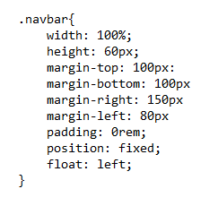

Detta är olika sätt att positionera texter och bilder
- Width = Sätter vidden av ett element. Man kan sätta vidden i tex %, pixlar eller rem (relativ till font-storleken). Standard är auto, och då anpassar webläsaren själv vidden.
- Height = Sätter höjden av ett element. Man kan sätta höjden i tex %, pixlar eller rem. Standard är auto, och då anpassar elemnetet sig så att sitt kontent syns.
- Margin = Det finns top, bottom, left och right. Man kan ställa in var och en av deras marginal runt elementet.
- Padding = Utrymmet runt om elementet. Top, bottom, left och right.
- Float = Flyter elementet antingen till vänster eller till höger.
- Position = Det finns 5 olika positioner. Static, relative, fixed, absolute, sticky.
- Static = Alla element är static som standard. Det betyder att de är alltid positionerade enligt sidans flöde.
- Relative = Detta element kommer att positionera sig relativ till sig själv, och inget annat element kommer att placeras här.
- Fixed = Detta elemenet kommer alltid att finnas på samma plats även om man skrollar.
- Absolute = Detta element placeras ovanpå eller under andra objekt.
- Sticky = Detta element är både relativ och fixed. Den förljer med scrollningen.